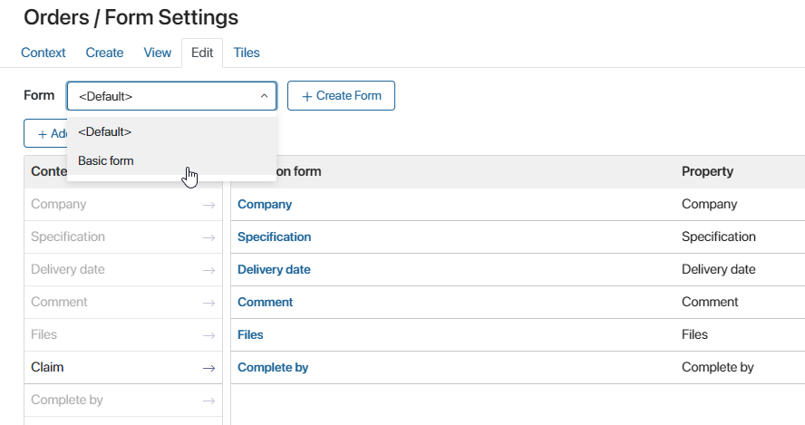
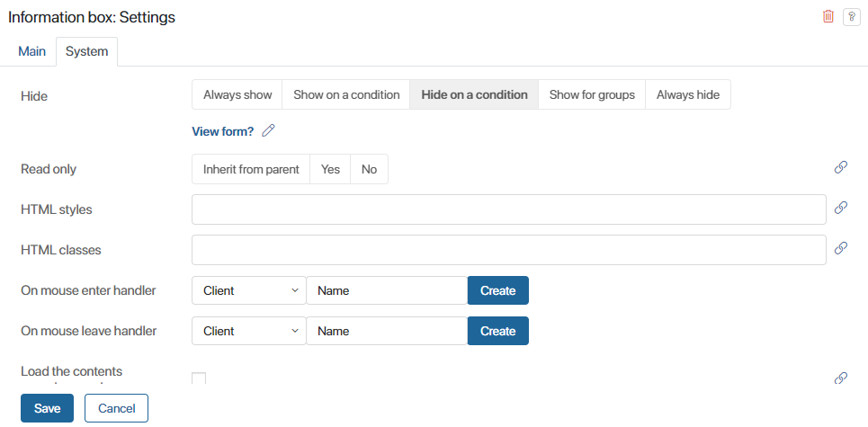

Let's say you need to create similar forms for creating, editing and viewing app items, with different conditions for displaying a widget. For example, the widget has to be available for editing on one of the forms, while it should be read-only on the other forms.
You do not need to create separate forms from scratch. Instead, set up a reusable template and specify widget display conditions for each of the forms.
Important: the settings described in this article are only applicable for app forms.
To illustrate how this works, let's create a template for the Orders app and set up display conditions for the Information box widget that will store instructions for filling out an order request. This widget has to be displayed on create and edit forms, and has to be hidden from the view form.
Create a reusable template for all app forms
Got to the app Form Settings and create a new template on either of the form tabs. Then, select this template for all of the other forms.
Let's create such a template in Order app settings, on the Create tab, and name it Basic form. Then, select this form on the View and Edit tabs.

Next, open the template in interface designer and add the Information box widget to the form.
Configure widget display conditions
To configure the widget's behavior on different app forms, do the following:
- In the template's context create variables that will store the type of the form opened by the user. For example, create a Create form? variable of the Yes/No switch type.
- Go to the Scripts tab and add a Client script that will write the Yes or No value to the variable. This code uses the
formTypesystem form property. This property is automatically given the create, edit or view value depending on the type of app form the the user has opened. Code example:
async function onInit(): Promise<void> {
ViewContext.data.isFormCreate = ViewContext.data.__formType?.code === 'create';
ViewContext.data.isFormEdit = ViewContext.data.__formType?.code === 'edit';
ViewContext.data.isFormView = ViewContext.data.__formType?.code === 'view';
}
When the script runs after user opens the Create form, the following happens:
- Yes is written to the
isFormCreate(Create form?) variable;
- No is written to the similar
isFormEdit(Edit form?) andisFormView(View form?) variables.
- In widget settings, on the System tab, in the Hide field click either Show on condition or Hide on condition and select a corresponding variable.
Let's configure this behavior for the Orders app form:
- Open the basic form template in interface designer. Go to the Context tab and create the View form? variable of the Yes/No Switch type.
- On the Scripts tab, add the following Client script:
ViewContext.data.isFormView = ViewContext.data.__formType?.code === 'view';
- In the settings of the Information box widget go to the System tab. In the Hide field, click on Hide on condition and select the View form? variable.

Now, when a user opens an order's view form, the information box with instructions is not shown, because the the Yes value is written to the View form? variable, and the Information box widget activates the Hide on condition option.
If the user opens the create or edit form, the instructions are displayed, because the No value is written to the View form? variable, and the Hide on condition option is not activated in the widget.
Found a typo? Select it and press Ctrl+Enter to send us feedback